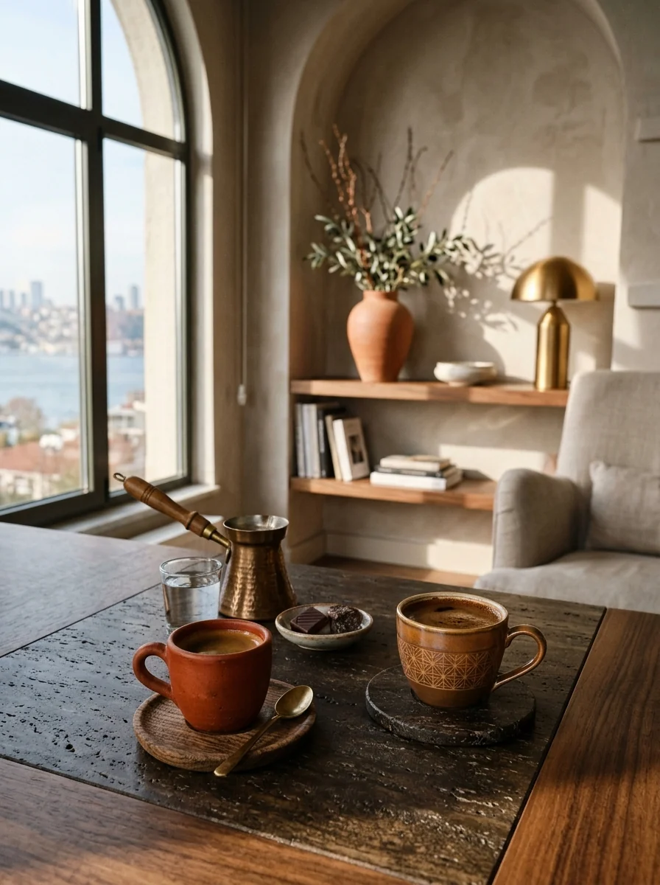

Takım Çalışması
Kurumunuzun iç ekipleriyle omuz omuza çalışır, karar alma süreçlerinde hızlı, ulaşılabilir ve çözüm odaklı bir yol arkadaşı oluruz.
Yirmi yılı aşkın süredir yalnızca basın bülteni gönderen bir aracı değil; kurumların sesini, duruşunu ve toplumsal itibarını geleceğe taşıyan stratejik bir iletişim ortağı olarak çalışıyoruz.

3D İletişim Hizmetleri, 2005 yılında İstanbul'da tek bir güçlü inançla kuruldu: İletişim, yalnızca gürültü üretmek ya da takvim doldurmak değil; bir kurumun varoluş amacını toplumun zihninde ve kalbinde kalıcı bir güvene dönüştürme sanatıdır. O günlerden bugüne medya ekosistemi kökten değişti, geleneksel gazetelerin yanına dijital platformlar ve yeni nesil yayın mecraları eklendi; ancak bizim merkezimize koyduğumuz samimiyet, titizlik ve stratejik derinlik hiç değişmedi.
Kurulduğumuz ilk günden itibaren klasik ajans kalıplarının ötesine geçmeyi seçtik. Her kuruma aynı şablonları sunan, brief'i alıp mesafeli bir operasyona dönüştüren anlayışı reddettik. Bunun yerine Mecidiyeköy'deki ofisimizin kapısından giren her yöneticiyle, girişimciyle, bilim insanıyla ve sivil toplum lideriyle önce bir fincan kahve eşliğinde gerçek bir tanışma zemini kurduk. Çünkü bir markanın hikayesini dünyaya doğru anlatabilmenin ilk şartı, o hikayeyi en az kurucusu kadar içtenlikle dinleyebilmektir.
"Yirmi yılı aşkın sürede yerel KOBİ'lerin ulusal markalara, köklü kurumların ise topluma yön veren itibar liderlerine dönüşümüne bizzat eşlik ettik."
Bu yolculukta yalnızca tek bir sektörle sınırlı kalmadık; çok disiplinli bakış açımızla Türkiye'nin en prestijli kurumlarının iletişim süreçlerine yön verdik. Sporun birleştirici ruhunu taşıyan Türkiye Jokey Kulübü (TJK) ve Fenerbahçe Spor Kulübü ile toplumsal yankı uyandıran projelere imza attık. Bilim ve sağlık iletişiminde yüksek hassasiyet gerektiren Türk Nöroşirürji Derneği ve Türk Yoğun Bakım Derneği gibi köklü uzmanlık derneklerinin kamuoyuyla doğru, bilimsel ve etik bir dille buluşmasını sağladık.
Uluslararası ölçekte ses getiren BODY WORLDS İstanbul Sergisi ile kültür-sanat ve bilim iletişiminde rekor erişimlere ulaştık. Diplomatik temsilin inceliklerini gerektiren Arjantin İstanbul Başkonsolosluğu organizasyonlarından, çocukların geleceğine ışık tutan TOÇEV sosyal sorumluluk projelerine kadar uzanan bu geniş yelpaze, 3D İletişim'i bugün İstanbul'un en deneyimli ve çok yönlü halkla ilişkiler ajanslarından biri haline getirdi.
Soğuk prosedürler, uzun bürokratik zincirler ve tek taraflı sunumlar yerine; aynı masada düşünen, birlikte üreten ve sorumluluğu paylaşan bir ortaklık kültürü.

"Bir kahvenin kırk yıl hatırı vardır" anlayışını modern PR disipliniyle birleştiriyoruz.
Bizim için iyi bir iletişim ortaklığı, sözleşmenin imzalandığı gün değil, karşılıklı güvenin ve açık diyaloğun kurulduğu gün başlar. "Bir kahvenin kırk yıl hatırı vardır" geleneğimiz, iş yapış biçimimizin özünü yansıtır: Soğuk prosedürlerin arkasına saklanmadan, krizi de başarıyı da aynı masada karşılayan, uzun soluklu dostluklara dayanan profesyonel iş birlikleri kurarız.
Bu samimiyetin diğer yarısında ise tavizsiz bir etik yayıncılık ve veri odaklı strateji anlayışı yer alır. Gazetecilerle ve editörlerle yirmi yılı aşkın süredir kurduğumuz saygın ilişkileri asla haber değeri taşımayan içeriklerle yıpratmayız. Her kampanyayı medya içgörüleri, paydaş araştırmaları ve ölçülebilir performans göstergeleriyle (KPI) destekleyerek markanızın hem bugün hem de on yıl sonra güvenle anılmasını sağlarız.
Kurumunuzun iç ekipleriyle omuz omuza çalışır, karar alma süreçlerinde hızlı, ulaşılabilir ve çözüm odaklı bir yol arkadaşı oluruz.
Uluslararası halkla ilişkiler etiği, doğruluk ve şeffaflık ilkeleri doğrultusunda hareket ederek kalıcı kurumsal itibar inşa ederiz.
Yapay gündemler yerine toplumda gerçek karşılığı olan, insana dokunan, samimi ve sürdürülebilir marka hikayeleri anlatırız.
Veriye dayalı stratejiyi yaratıcı kurgularla buluşturur; her adımın erişimini, algı etkisini ve iş değerini şeffaf biçimde raporlarız.
3D İletişim Hizmetleri'nin sektörel deneyimi, çalışma modeli ve ölçümleme standartları hakkında en çok sorulan sorular.
2005 yılından bu yana İstanbul merkezli olarak faaliyet gösteren 3D İletişim Hizmetleri; sağlık ve tıbbi uzmanlık dernekleri (Türk Nöroşirürji Derneği, Türk Yoğun Bakım Derneği), spor kulüpleri ve federasyonlar (Türkiye Jokey Kulübü, Fenerbahçe Spor Kulübü, PBIC E-Spor), uluslararası kültür-sanat ve bilim sergileri (BODY WORLDS), sivil toplum kuruluşları (TOÇEV), diplomasi ve başkonsolosluklar (Arjantin İstanbul Başkonsolosluğu) ile moda, perakende ve teknoloji sektörlerinde derinleşmiş sektörel uzmanlığa sahiptir.
3D İletişim, standartlaşmış paket yaklaşımlar ve mesafeli müşteri-tedarikçi prosedürleri yerine "Müşteri değil, aynı takımın oyuncusuyuz" anlayışını benimser. Her iş birliği kapsamlı bir kurumsal algı ve paydaş analiziyle başlar; ardından kurumun iş hedeflerine özel olarak tasarlanan stratejik iletişim yol haritası, doğrudan kıdemli danışmanların liderliğinde ve kurum içi ekiplerle tam entegrasyon içinde uygulanır.
Tüm PR ve etkinlik süreçleri şeffaf ve veri odaklı raporlama disiplinimizle ölçülür. Aylık ve proje bazlı raporlarımızda yazılı basın, televizyon, radyo ve dijital medya yansımalarının toplam erişimi, reklam eşdeğeri (AVE), ton analizi (pozitif/nötr/negatif algı dağılımı), anahtar mesaj penetrasyon oranı ve etkinlik katılım metrikleri yönetim kurulu seviyesinde özetlerle sunulur.
Evet. 2005'ten bu yana hem köklü holdingler ve uluslararası kurumlarla hem de büyüme vizyonuna sahip yerel KOBİ'ler, girişimciler ve sivil toplum liderleriyle çalışıyoruz. Önemli olan kurumun ölçeği değil, anlatmaya değer bir vizyonu ve sürdürülebilir itibar inşa etme kararlılığıdır; strateji ve bütçe planlaması her kurumun olgunluk evresine göre özelleştirilir.